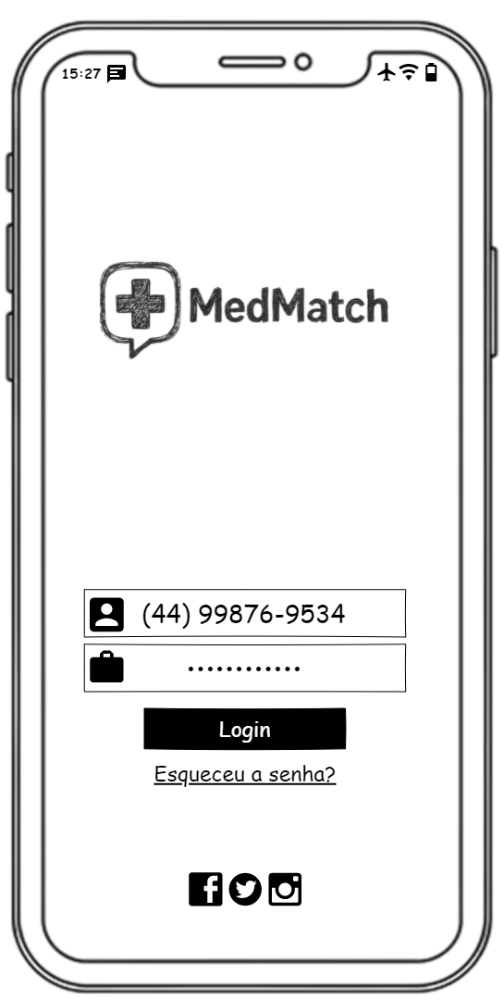
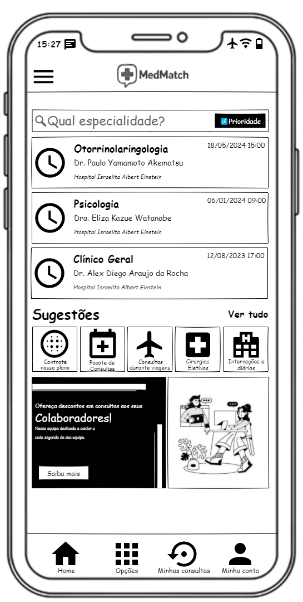
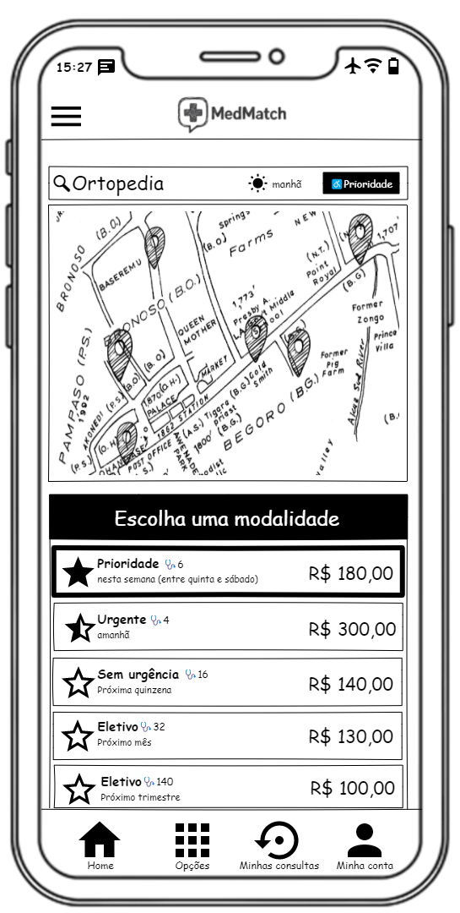
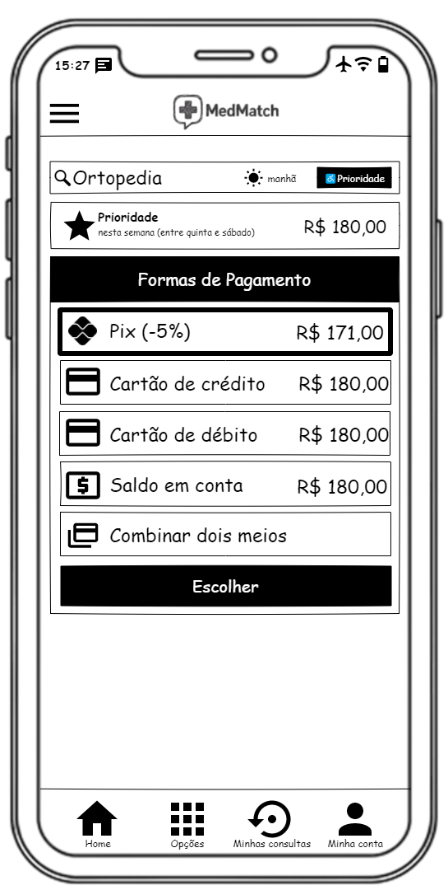
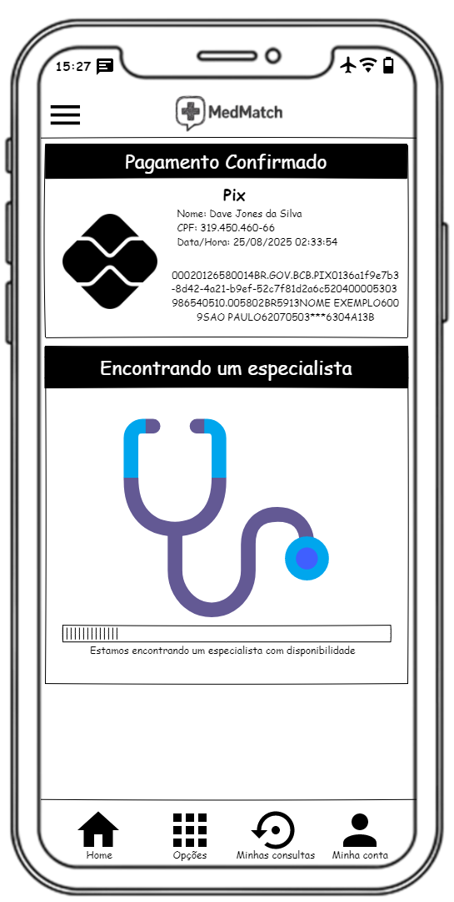
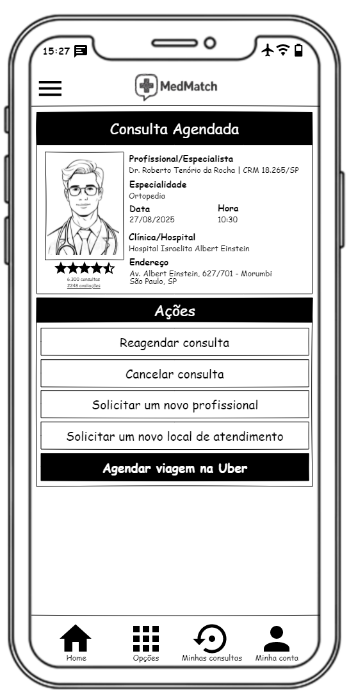

Informações do solução/aplicativo
- Nome da solução/aplicativo: MedMatch – Consultas médicas sob demanda
- Desenvolvedor: Alex Rocha
- Plataformas: Android e iOS
Informações do App
MedMatch – Consultas médicas sob demanda
Agende suas consultas médicas de forma rápida, prática e sem complicações com o MedMatch! Assim como você chama um carro pelo aplicativo, agora você pode marcar sua consulta com médicos de diversas especialidades em poucos cliques.
Principais funcionalidades:
- Agendamento instantâneo: Escolha o médico disponível mais próximo ou aquele que atende na especialidade desejada.
- Perfis detalhados de médicos: Veja especialidades, experiência, avaliações de outros pacientes e horários disponíveis.
- Notificações inteligentes: Receba lembretes sobre consultas e confirmações de agendamento.
- Consultas seguras e confiáveis: Todos os profissionais cadastrados passam por verificação rigorosa.
- Histórico completo: Acompanhe suas consultas anteriores e organize seus exames e receitas. Com o MedMatch, cuidar da sua saúde nunca foi tão simples. Economize tempo, evite filas e tenha médicos qualificados na palma da sua mão.
Baixe agora e experimente a revolução no agendamento de consultas médicas!
Público Alvo
O MedMatch é ideal para pessoas que valorizam praticidade, rapidez e conveniência na hora de cuidar da saúde. Isso inclui:
- Adultos urbanos e trabalhadores ativos, que possuem rotina corrida e buscam agendar consultas médicas sem precisar enfrentar filas ou burocracia.
- Pais e responsáveis, que precisam marcar consultas para seus filhos de forma prática e organizada.
- Pacientes que valorizam informação e segurança, que querem acessar perfis detalhados de médicos, verificar especialidades, experiências e avaliações antes de escolher um profissional.
- Usuários de tecnologia, que estão acostumados a utilizar aplicativos para facilitar tarefas do dia a dia, como transporte, delivery e serviços sob demanda.
- Pessoas que desejam manter controle sobre sua saúde, acompanhando histórico de consultas, exames e receitas de forma organizada.
Em resumo, o MedMatch atende qualquer pessoa que deseja agilidade, segurança e facilidade na gestão de consultas médicas, tornando a experiência de cuidar da saúde mais moderna e eficiente.
Descrição funcional das Telas/Formulários
| Tela | Descrição funcional |
|---|---|
|  |
A tela de login do MedMatch é a primeira interface que o usuário terá contato. Nela será exigido a autenticação do usuário, por telefone ou e-mail, uma vez que todas as ações de dentro do MedMatch necessitam das informações do usuário. Ainda nesta tela o usuário poderá se cadastrar, caso não possua um login, e também recuperar sua senha, caso possua cadastro mas não consiga acessar. Por fim, o usuário poderá acessar as redes sociais da MedMatch nas plataformas Facebook, X e Instagram. |
|  |
Essa é a tela principal do MedMatch. Ela é responsável por fornecer as principais funções do app, sendo a destaque a busca por uma especialidade, em que o usuário pode escolher uma especialidade médica que necessita, informar o período desejado e acionar a opção de acessibilidade - clínicas que oferecem ambulâncias e veículos para pessoas PCDs. Outra grande função dessa tela é fornecer um histórico sobre os últimos agendamentos realizados, caso o usuário deseja saber as informações do agendamento ou solicitar rapidamente uma consulta com a mesma especialidade. Ainda nessa tela é possível acessar algumas sugestões, como contratação do plano MedMatch, contratar consultas recorrentemente, realizar consultas durante viagens, contratar cirurgias eletivas e interações e diárias médicas. |
|  |
Esta tela é apresentada após o usuário escolher uma especialidade desejada na Tela de busca de consultas. O usuário poderá escolher o melhor momento em que a consulta será realizada, sendo o período a segunda principal variável no cálculo do preço da consulta (a primeira é a especialidade). As estrelas em cada um dos períodos indica a melhor escolha do ponto de vista do tempo: a estrela mais cheia representa o momento mais imediato e as estrelas menos cheias e vazias representam momentos distantes. Quanto mais próximo da data da consulta, mais cara ela será. |
|  |
Nesta tela o usuário escolherá a forma de pagamento da consulta. As principais formas de pagamento são: PIX, cartão de crédito, cartão de débito e saldo em conta. Há também a possibilidade de realizar o pagamento combinando dois métodos. Para pagamento PIX, há um desconto de 5%, pois não há taxas da operadora. Assim, o valor da taxa pode ser repassado ao cliente em forma de desconto. Há também a possibilidade de uso do saldo em conta, que fica a crédito do cliente no app, oriundo de créditos de cartão de presentes, devoluções e cupons aplicados. |
|  |
A tela de confirmação do pagamento possui duas finalidades: apresentar o comprovante de pagamento e a busca pelo profissional, sendo esta a mais importante. A busca por um profissional de saúde vai depender de um profissional aceitar. Este, portando uma outra versão do app, semelhante ao app Uber - Motorista, pode aceitar ou não. Essa busca pode levar alguns minutos, até que algum profissional cadastrado aceite. Porém, caso não encontre nenhum profissional de saúde, o valor cobrado é estornado ao usuário pelo mesmo método de pagamento efetuado na tela anterior. |
|  |
Essa é a tela final do fluxo de contratação de uma consulta. O usuário receberá as informações do profissional de saúde, o número de registro no conselho referente à sua profissão, seu local de atendimento e data do agendamento da consulta. O usuário também visualizará uma foto do médico, obrigatório no cadastro do profissional da plataforma, e também seu número de consultas realizado e as avaliações dos pacientes. Há também um indicador de avaliação (Doctor Rating) com no máximo cinco estrelas. A avaliação do médico é calculada com base nas últimas 300 consultas. |
Referências
FREEPIK. Freepik: banco de imagens, fotos vetores e vídeos grátis. Disponível em: https://www.freepik.com/. Acesso em: 28 ago. 2025.
Uber Technologies, Inc. Uber. Uber: Peça viagem de carro. Disponível em: https://play.google.com/store/apps/details?id=com.ubercab&hl=pt_BR. Acesso em: 28 ago. 2025.
Uber Technologies, Inc. Uber. Uber Driver - para motorista. Disponível em: https://play.google.com/store/search?q=Uber%20Motorista&c=apps&hl=pt_BR. Acesso em: 28 ago. 2025.
UBER. Uber: transporte particular de passageiros. Disponível em: https://www.uber.com/br/pt-br/. Acesso em: 28 ago. 2025.